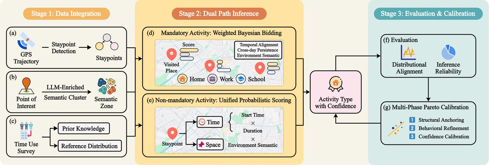
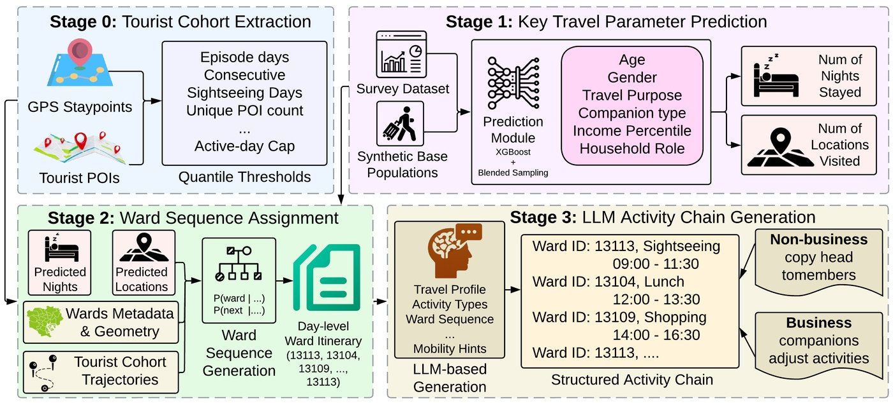
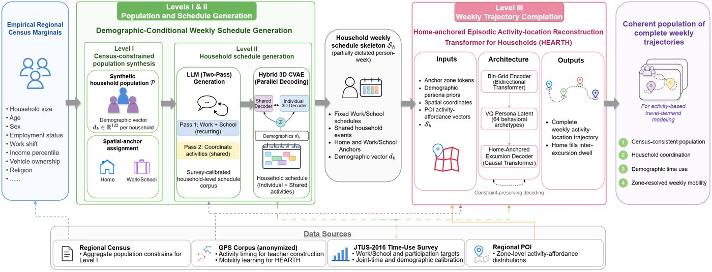
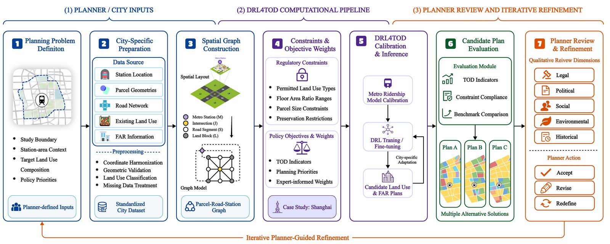

Bo Yang
Ph.D. Student, UCLA Mobility Lab
University of California, Los Angeles
I am a Ph.D. student in the UCLA Mobility Lab at the University of California, Los Angeles, advised by Prof. Jiaqi Ma. My research builds generative models of human mobility that stay coherent across levels: the daily activity–travel patterns of individuals, the coordination within households, and the aggregate movement of entire cities. Recent work includes diffusion models for whole-day activity generation, generation constrained by aggregate statistics, and LLM-based population and mobility synthesis.
Previously, I received my Master of Computing in Computer Science from the National University of Singapore and my B.Eng. from Nanjing University.
Publications
Conference Papers
-

ITSC 2026Uncertainty-Aware Trip Purpose Inference from GPS Trajectories via POI Semantic Zones and Pareto Calibration
IEEE International Conference on Intelligent Transportation Systems (ITSC), 2026
-

ITSC 2026GPS-Enhanced Tourist Mobility Modeling with Seasonal Spatial Priors and LLM-Based Activity Chain Generation
IEEE International Conference on Intelligent Transportation Systems (ITSC), 2026


Under Review
-

Information FusionPopTraj: Hierarchical Multi-Source Generation of Household-Coordinated Weekly Activity–Location Trajectories with Urban Population Synthesis
Information Fusion, under review
-

TR-CPerforming Transit-Oriented Development Planning Using Deep Reinforcement Learning
Transportation Research Part C: Emerging Technologies, under review


* Equal contribution
Research Experience
-
UCLA Mobility LabSep. 2025 – Present
Graduate Student Researcher, advised by Prof. Jiaqi Ma
-
MIT–NEU–UF Research ProgramMay 2024 – Jun. 2025
Deep reinforcement learning for transit-oriented development planning, with Prof. Jinhua Zhao and Dr. Yuebing Liang
-
Temasek Laboratories @ NUSJun. 2022 – Sep. 2022
Graduate Researcher, approximate nearest-neighbor search for radar-signal retrieval
-
NUS Smart Medical Technology LabSep. 2021 – Dec. 2021
Research Intern, vision-based non-contact vital-signs detection
Education
-
University of California, Los Angeles2025 – Present
Ph.D. in Civil Engineering
-
National University of Singapore2022 – 2023
Master of Computing (Computer Science), School of Computing
-
Nanjing University2017 – 2021
B.Eng. in Industrial Engineering
Academic Service
- IEEE Open Journal of Intelligent Transportation Systems (OJ-ITS)
Editorial Coordinator
- IEEE ITSS Technical Committee on Trustworthy AI
Student Committee Member